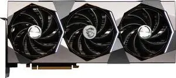

Serie RTX 4000
NVIDIA GeForce RTX 4080 SUPER
La NVIDIA GeForce RTX 4080 SUPER es una tarjeta gráfica de gama alta diseñada para ofrecer un rendimiento excepcional en videojuegos y aplicaciones exigentes. Basada en la arquitectura NVIDIA Ada Lovelace, cuenta con 16 GB de memoria GDDR6X y una gran potencia de procesamiento, permitiendo disfrutar de juegos en 4K con gráficos en Ultra y excelente rendimiento con Ray Tracing. Además, incorpora tecnologías como DLSS 3 y Frame Generation, que aumentan considerablemente los FPS manteniendo una excelente calidad de imagen. También es una opción ideal para edición de video, renderizado 3D y creación de contenido profesional.
- Arquitectura NVIDIA Ada Lovelace
- Núcleos CUDA 10,240
- Memoria VRAM 16 GB GDDR6X
- Bus de memoria 256-bit
- Velocidad de memoria 23 Gbps
- Frecuencia Boost Hasta 2.55 GHz
- Ancho de banda 736 GB/s
- Ray Tracing Sí, núcleos RT de 3.ª generación
- DLSS Sí, DLSS 3 y Frame Generation
- Consumo energético 320 W
- Resolución máxima 8K
- Conectividad HDMI 2.1a y DisplayPort 1.4a
- Ideal para Gaming en 4K Ultra, Ray Tracing, edición de video y renderizado 3D
$750.00
Realizar pedido